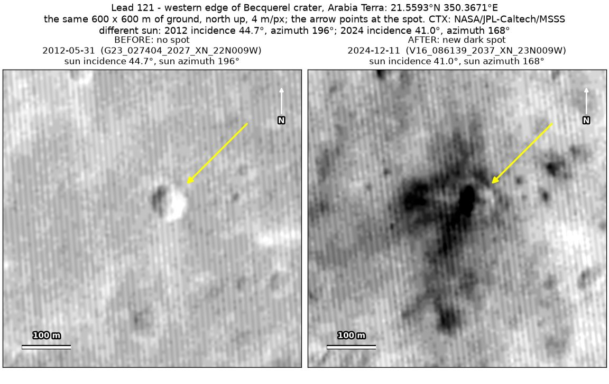
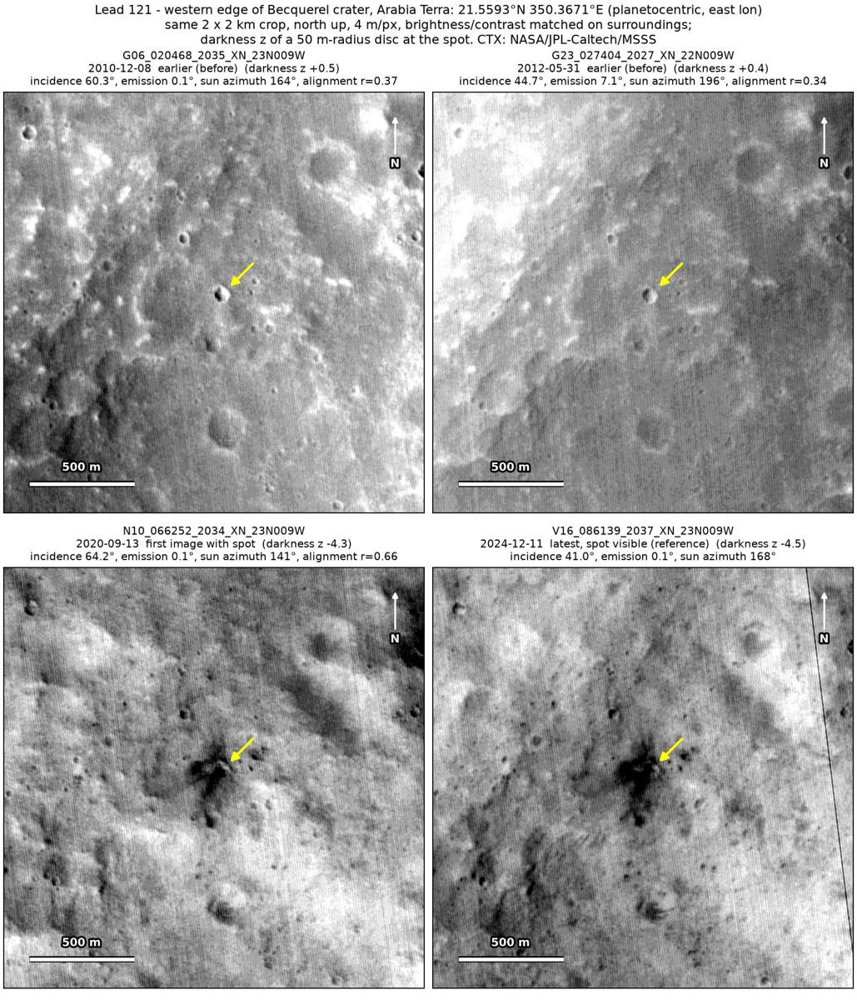
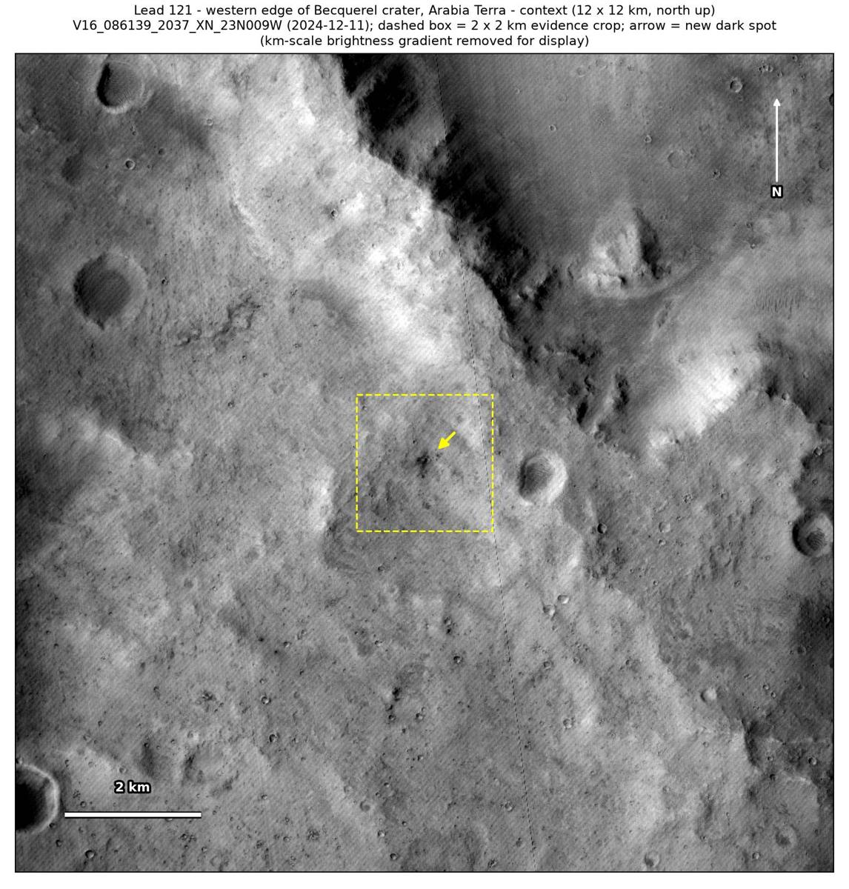

Professor of Mathematics
Paata Ivanisvili
Department of Mathematics, University of California, Irvine

← Possible new impact sites on Mars
Candidate 121: Western edge of Becquerel crater, Arabia Terra
Promising · roughly 45%

What changed. An irregular dark patch about 100 to 150 m across appeared around and just north-east of an older crater about 30 m across, on plains at the western edge of Becquerel crater, between May 2012 and September 2020. It is still there in December 2024, seen in two CTX images from two orbits.
Why it may be a new impact. Two earlier images, of December 2010 and May 2012, show only the crater there. Subtracting an earlier image from a later one shows the strongest change at the patch, with no other new dark mark and no tracks in the surrounding 5 × 5 km, and a new dark patch like this could be the blast zone of a small new impact beside the older crater.
- Location
- 21.559° N, 350.367° E (9.633° W)
- Absent
- 8 December 2010 and 31 May 2012
- Present
- 13 September 2020 and 11 December 2024
- Size
- Irregular dark patch about 100 to 150 m across (86 × 142 m in the December 2024 image) around an older crater about 30 m across
- Confidence
- Promising candidate: roughly 45% likely to be a new impact.
- Caveat
- The patch has an irregular edge and surrounds an older crater, so the wind may have exposed dark material or blown it out of that crater; a new impact right beside an older one would be a coincidence, though small craters are common here. The earlier images line up only modestly, though the crater lines up in all four, and a dark mark nearby, which would show what they could reveal, is faint in the May 2012 image. No image from the high-resolution HiRISE camera covers it; the nearest ends 61 km away. Like every candidate here, it is unconfirmed: see the caveat.

